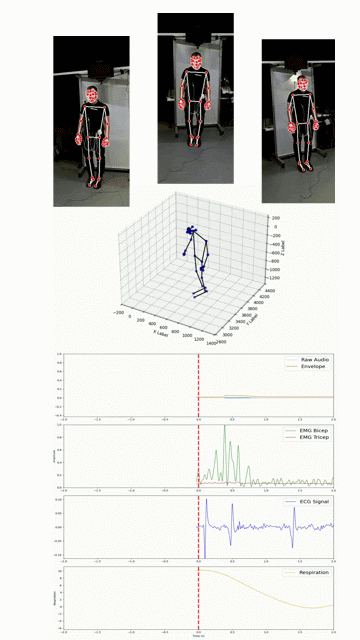

DAVIDE AHMAR
cognitive neuroscience · multimodal interaction
cognitive neuroscience · multimodal interaction

My name is Davide Ahmar, and I am a PhD candidate in the IMPRS LIFE program, working with Prof. Marcel Brass (Humboldt University of Berlin) and Dr. Michael Gaebler (Max Planck Institute for Human Development) in Berlin (2026–2029). My research focuses on the multimodal processes that support interpersonal coordination and affiliation in face-to-face interactions and immersive virtual reality environments, combining neural, behavioural, and physiological measures.
I obtained a joint Bachelor's degree in Cognitive Neuroscience and Psychology from the University of Manchester (2018–2022) and a Research Master's degree in Cognitive Neuroscience from the Donders Institute in Nijmegen (2022–2024). During my undergraduate training, I also worked at the Italian Institute of Technology in Rome (2020–2021) with Dr. Giacomo Novembre, investigating spontaneously emerging patterns of neural and behavioural synchrony in interacting dyads. For my MSc research, I worked with Prof. Ivan Toni on an interdisciplinary project that used live neurostimulation to enhance the effectiveness of exposure therapy for fear of public speaking. In this context, I developed a portable multimodal system to record and quantify subtle avoidance behaviours during the patients' live speeches.
Following my MSc, I moved to the field of animal cognition working at Max Planck Institute for Evolutionary Anthropology (2025–2026), where I conducted a touchscreen-based study on mental simulation abilities in zoo-housed great apes with Dr. Christoph Völter. Over the last years, I have also been a core member of EnvisionBOX, a didactical open-science platform dedicated to sharing tools and methods for multimodal research on interaction and communication.
My work sits at the intersection of social neuroscience, movement science, and multimodal methods. I am broadly interested in how people coordinate their bodies and brains during real-world social encounters — from subtle postural adjustments and gaze patterns to large-scale neural synchrony between interacting individuals.
During my undergraduate internship at the Italian Institute of Technology, I contributed to research demonstrating that spontaneous body movements synchronise between interacting partners when visual contact is present, and that such behavioural synchrony predicts the emergence of interpersonal neural synchrony (EEG hyperscanning). My master's research took an applied turn: combining EEG, motion tracking, and transcranial electrical stimulation in a clinical context to target avoidance behaviours in social anxiety.
At the Max Planck Institute for Evolutionary Anthropology, I broadened my comparative perspective by studying mental simulation and anticipation in great apes using touchscreen paradigms.
In my upcoming PhD, I plan to investigate the multimodal brain–body dynamics of face-to-face interaction, combining neural (EEG), physiological (ECG, EDA, respiration), and behavioural (motion capture, eye tracking) measures in both naturalistic and immersive virtual-reality settings. A key goal is to understand how these inter-personal coupling processes relate to social bonding, affiliation, and emotion regulation.
Neural and behavioural synchrony in dyadic interaction
Combining EEG, motion capture, physiology & eye tracking
Affective processes linking neural, autonomic, and motor systems
Visual simulation and anticipation in great apes
Koul, A., Ahmar, D., Iannetti, G. D., & Novembre, G. (2023).
Spontaneous dyadic behavior predicts the emergence of interpersonal neural
synchrony.
NeuroImage, 277, 120233.
doi:10.1016/j.neuroimage.2023.120233
Koul, A., Ahmar, D., Iannetti, G. D., & Novembre, G. (2023).
Interpersonal synchronization of spontaneously generated body movements.
iScience, 26(2), 106104.
doi:10.1016/j.isci.2023.106104
I am always happy to connect with fellow researchers, potential collaborators, and anyone interested in multimodal neuroscience. Feel free to reach out through any of the channels below.